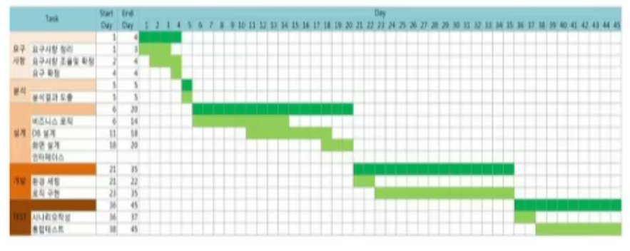

knou-1-1-경영학원론-경영의 역사
경영의 역사적 배경
경영의 흔적
기업의 생성과 발전 및 경영에 대한 생각,혹은 이론의 확장에 이해가 필수
메소포타미아 지역의 대규모 간척사업,이집트 피라미트 건설
창세기 아브라함의 직업 - 신상 공장
로마시대 무기 및 갑옷의 제작 - 갑옷 공장
중세에 들어서 상업이 매우 융성함
베네치아에서는 현대식 배 건조 - 십자군 전쟁에 배 공급(배 공장)
식민지 시대의 벤처 - 식민지 지역의 자원을 가져오고 해체
1602년 네덜란드 동인도 회사의 설립 - 최초의 주식회사
18세기 영국에서 산업혁명 시작, 미국은 남북전쟁이 끝난 19세기 중후반기에 본격적으로 진행 - 본격적 기업 등장
주문 생산 -> 기계의 힘을 활용항 제품을 생산하여 불특정 소비자에게 판매하는 기업 활동이 시작 : 생산 -> 판매로 변화
체계적 기업 경영의 필요성이 대두되었으나 본격적인 경영 이론은 20세기에 들어와서 등장
근대 경영이론 이전
메소포타미아의 설형문자로 기록된 최초의 문헌은 재산 상태를 기록한 것 : 회계 서류
중세 이후 상업의 발달 : 재산 상태 측정 기록 -> 가문의 비기로 관리 발전이 늦음
파차올리: 복식부기 체계화
1494년
산업,기하,비례 총람
사바리는 1675년
완전한 상인- 최초의 경영학의 문헌아담 스미스 1776년
국부론분업의 효율성 강조
전통 경영이론의 태동과 발전
과학적 관리
시대 배경
산업 혁명 이후 기업의 대규모화 및 생산 확대
경영은 주먹구구식
테일러는 주먹구구식을
표류 경영(Drift)이라고 표현함.
능률 증진 운동: 불만과 파업이 발생하여 노동생산성 향상,임금의 합리화, 생산방식의 과학화
테일러의
과학적 관리로 이어짐 - 처음으로 과학화됨.
테일러
작업을 평가하는 기준이 필요하고, 기준을 과업이라고 했다.
과학적인 작업방식에 관하여 연구를 했다.
작업 수행 최적 동작 제시, 작업 소요 시간 정확히 측정
과업(task)
하루에 노동자가 할 수 있는 최적 작업량
성과급 제도
과학적 작업 방식 연구를 통한 과업 할당
과학적 근로자 선발과 교육
성과급 제도
기능별 관리 - 전체 공정을 한 사람이 아니라 기능별로 관리자를 두었다.
계획과 작업의 분리
과학적 관리의 추종자
갠트(Gantt) 작업 시간 단축을 위해 시간연구
갠트차트 고안: 차트에 따라 작업을 진행하였다.

길브레스(Frank and Lillian Gilbreth) 부부
동작연구를 통해 작업과정 단순화 및 단축
핸리 포드(Ford) _3S_
제품의 표준화(standardization): 단일 제품 생산원칙
작업의 단순화(simplification): 작업 과정 분리 단순한 작업의 합으로 재 구성
인력의 전문화(specialization): 한 작업과정만 담당하는 전문성 증대,전체 효율성 증가
1913년 이동식 조립시스템을 도입하여 생산성이 수천 배 오름(사람은 그대로)
연간 수 천대 -> 수 십만대 생산, 가격 인하
포드의 경영관(Fordism)> 기업의 목표: 이윤의 극대화라기보다 대중에 관한 봉사다 .
일반 관리론
페이욜(Fayol): 경영은 기업뿐만 아니라 모든 조직에 적용된다.
산업 및 일반 관리1929: 경영은 조직의 구조나 규모에 관계없이 수행하는 6가지 활동이며 관리는 그 중하나의 활동테일러는 공장의 생산성을 초점에 맞춘거라면, 페이욜은 모든 조직의 경영에 관심을 가짐.
막스 베버(Max Weber) 의 관료제
구족이나 왕족이 아니라 경영자가 누구든 상관없다.
규율과 절차에 따라 운영 경영자에 관계없이 합리성에 의해 작동
조직이 경직성,환경 변화에 둔감
오늘날에도 관료적 경영을 완전히 벗어나지 못함
전체적인 조직의 운영에서 합리성에 의해서 움직이는 조직을 제안했습니다.
인간에 따라서 조직의 운영이 달라지는 것이 아니라 규정과 규제에 따라서 움직인다는 것.
인간관계론
테일러의 과학적 관리라는 것의 한계를 뛰어넘는 이론 등장 호손 실험: 호손공장에서 실험
Mayo메이요) 테일러가 말하는 과학적 관리가 호손 공장에서도 실험햇다..
조명의 정도와는 무관하게 모든 실험집단의 생산성이 향상
관심을 받고 있다는 사실로 인해 생상성 향항
인관관계론의 공헌과 한계
인간 = 기계 관점 탈피, 경영의 초점을 인간으로 한다.
행동 과학의 발전에 공헌
물리.기계적 요소 무시, 인간을 과도하게 중시
비공식 조직에 관심,공식적 조직 무시
체계적인 이론 부재로 실제 경영성과로 이어지지 못함
기업을 폐쇄적 존재로 보고 외부 조직과의 상호작용 무시
과학적 관리나 인간관계론이나 한계는 동일합니다.
현대 경영이론
계량적 접근
2차 세계대전 중 군사무누제를 해결하기 위해 개발된 수학과 통계학적 해법을 경영 문제의 해결에 적용.
의사 결정 문제에 최적화 최적화 이론, 컴퓨터 모의 실험, 최상경로 분식, 선형 프로그래밍 기업 등을 적용
컴퓨터 및 소프트웨어의 발달로 활용이 용이해짐
경영 현장에 적용될 수 잇는 분야 한계로 학문학적 문제해결에 널리 활둉됨.
행동 과학적 접근
산업화가 진행됨에 따라 사회 현상은 복잡해졌고,사회 각 집단의 상호 의존성도 높아지면서 갈등과 불화가 발생
현상을 이해하고 문제를 해결하기 위해 개별 사회과학을 망라하는 종합과학적 접근을 활용하는 시도가 생겨남
행동 과학은 인간의 행위에 대한 일반이론의 수립을 목표로함
경영학 연구에 활용되고 있고 최근 경제학에로도 확대댐.
시스템 이론
생물학에서 나온 이론으로 소화계등이 하나의 인간이되고 소화계내에도 위나 대장도 있듯이 시스템으로 표현함
시스템: 복잡한 환경 내에서 목표를 달성하기 위해 독립적 혹은 공동으로 작용하는 상호 관련된 부분의 집합
기업의 모든 활동을 외부 환경과 상호작용 하여 이루어지는 시스템 관점에서 파악
인간과 조직의 균형을 강조하는
조직론적 관리론제안
버나드(Chester Bernard)
조직은 2인 이상의사람들의 힘과 활동을 의식적으로 조정하는 사회적 협동시스템
외부 시스템과 균현된 관계 유지가 경영의 핵심
조직 경영은 참여자는 공헌 만큼 만족을 주는 과정
물리적 및 심리적 보상을 주어야 하며 이를 위해 공식적 조직과 비공식 조직의 관련성 고려 필요
권한 수용론; 하급자가 상급자의 권한을 수용해야 조직 작동
사이먼(H.A Simon)
조직적 의사결정론
경영은 다른 사람으로 하여금 일이 되게 하는 과정
합리적 선택 즉 의사결정이 경영의 핵심
제한된 합리성(bounded rationality)을 가지고 의사 결정
합리적 경제인->관리인
경영자가 의사 결정을 정확하게 하는것, 합리적으로 하는것, 그것이 경영의 핵심이라는 것
상황적합이론
시스템이론은 여러 가지 상호작용이 중요하다. 시스템과 시스템간의 상호작용으로 기업을 폐쇄적인 시선으로 보는게 아니라 개방적으로 다른 시스템과의 균형으로 보는게 중요하다.
현대에 오면서 다양한 환경이 있어서 모든 상황과 조직에 적용 가능한 경영이론이 있을까에 대한 시작
페이욜은 모든 조직에, 모든 상황에 적용 가능한 경영이론이 있다고 주장했지만
과학적 관리가 게임 기업이나 제약회사에 적합 ?
경영 상황이나 조직의 특성에 따라 다른 접근법 필요
상황을 분리해서 상황에 적합한 경영이론을 개발해야한다.
상황 분류 변수: 기업의 크기,환경의 불확실성,기술의 경직성, 개인별 차이등.
연습문제
베네치아 상인들의 회계 방식을 체계화하여 복식부기를 완성시킨 사람으로 회계학의 아버지라 불리는 사람은?
파치올리
파치올리는 베네치아 상인들 사이에 비전으로 내려오는 복식부기 방식을 체계화하여 발표하였다. 사바리는 이탈리아지역의 상인들의 경영기법을 연구하여 경영이론을 발전시켰다.
테일러의 과학적 관리의 요소가 아닌 것은?
계획과 작업의 일치
계획과 작업을 분리하여 경영자는 계획을 전담하고 작업자는 계획에 따라 작업을 해나가는 방법을 제안하였다. 테일러의 업적 중 하나이다.
경영은 기업뿐 아니라 모든 조직에 적용될 수 있다고 주장한 사람은?
페이욜
테일러는 공장의 생산성 향상에 주로 관심을 가졌음에 반해 페이욜은 조직의 경영에 관해 관심을 가지고 연구하였다. 그는 모든 조직에 자신이 제안하는 경영원칙이 적용될 수 있다고 주장하였고 이런 의미에서 일반 경영이론이라고 한다.
조명이 생산성에 영향을 미친다는 실험의 결과 조명보다는 인간이 더 중요하다는 결론을 내린 학파는?
인간관계론
테일러의 과학적 관리는 인간을 기계로 간주한 면이 있다고 비판하면서 인간을 중시해야하는 경영이론이 탄생하였다. 그 계기는 조명이 생산성에 미치는 실험을 시도한 호손공장 실험이었다.
의사결정을 내릴 때 의사결정자를 경제인이라고 보는 전통적 견해를 부정하고 사이먼은 의사결정자를 무엇이라 보았는가?
관리인
인간을 합리적 경제인으로 간주하고 이론을 전개한 경제학 혹은 과학적관리 이론과 달리 사이먼은 경영을 의사결정과 동일한 개념으로 간주하고 의사결정은 완벽한 합리적인 과정을 거치지 않고 제한된 합리성을 전제로 이루어 진다고 하였다. 제한된 합리성을 가지고 의사결정하는 인간을 관리인이라고 하였다.
모든 기업 조직에 적용될 수 있는 경영이론은 없다는 회의적 시각을 가진 이론은?
상황적합이론